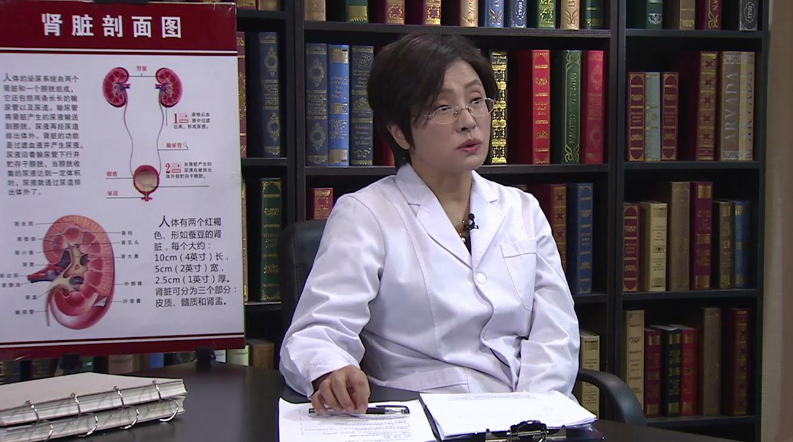

2.31 儿童慢性肾脏病及肾功能衰竭¶
陈朝英 主任医师¶

首都儿科研究所肾脏内科主任 主任医师 硕士研究生导师；
中华医学会儿科学分会小儿肾脏病学组委员；北京医学会肾脏病分会委员；北京医学会儿科分会肾脏病学组副组长；中国医师协会儿科医师分会小儿肾脏病专家委员会常委；中国医师协会儿科医师分会小儿血液净化专家委员会常委。
主要成就： 发表文章40余篇。
专业特长 ： 从事儿科临床工作20余年，擅长儿科肾脏疾病及遗尿症的诊断和治疗。
慢性肾脏病是怎么回事？¶
慢性肾脏病是怎么回事？
慢性肾脏病是这样定义的，就是肾脏的结构或者功能异常，然后要持续大于3个月以上。那么所谓的肾脏的结构和功能异常包括以下几个方面：
第一个就是出现这种白蛋白尿。
第二个就是他尿沉渣有异常，尿沉渣异常，包括尿里面有持续的镜下血尿，持续的红细胞增加，或者是管型的增加，这第二个。
第三个就是它的（肾）小管的功能的异常。
第四个就是出现这个肾脏的结构的异常，就是能够影响健康的这种结构的异常。
最后一个就是它这个肾脏肾小球的滤过率低于60ml/min/1.73㎡以上这几个方面呢，那么就如果说持续超过3个月以上，那么提示是有一个慢性肾脏病。
那么慢性肾脏病呢，它应该说是有一个分期，目前来说它分了1-5期，那么随着它那个期数的增加，提示他肾脏功能的一个进行性的减退，那么也就是说，它越来越重，从1-到5期，那么提示肾脏疾病的一个逐渐加重的过程。
它这个分期就是根据肾小球的滤过率。我们说肾小球滤过率，那是评价肾脏功能，肾小球滤过功能非常重要的一个指标，所以我们在慢性肾脏疾病分期的时候，就是依据这个肾小球滤过率：
1期肾小球滤过率是大于90ml/min/1.73㎡；
2期呢，就是60-89ml/min/1.73㎡；
3期是30-59ml/min/1.73㎡；
那么接下来呢，就是15-30ml/min/1.73㎡；
5期是小于15ml/min/1.73㎡；
那么到第5期以后，那么咱们就说叫做终末期肾病，那么达到这一期，那么这种一般是一个不可逆的过程，那么往往到了这一期的时候，也就是肾脏可能是需要一个替代治疗。
那么咱们下面可以看一看咱们肾脏的一个解剖的结构，我们说泌尿系统，是包括两个肾脏，然后还有输尿管、膀胱、尿道，是这样一个泌尿系统的结构。
那么我们说的肾脏，是外观呈现两个像蚕豆一样的这么一个结构的器官，这个器官包括了肾脏皮质，髓质，还有这个肾动、静脉，然后还有这个集合系统，最后形成输尿管，然后把尿液引流到这个膀胱，那么在这个里头呢，主要就是咱们肾脏的一些疾病，包括泌尿系统的一些疾病，最后都可以导致这种慢性肾脏疾病。
根据咱们国外的这种流行病学的这种调查资料显示，成人的慢性肾脏疾病已经达到了10%-15%，那么咱们国家根据2012年的一个流行病学的横断面调查，那么咱们国家也达到了10.28%所以可以看出，那么慢性肾脏疾病在成人里面，患病率是非常高的，那么由于这个疾病将来可能导致一种严重的结局，所以大家越来越引起重视。
哪些儿童要注意防范慢性肾脏病的发生？¶
哪些儿童要注意防范慢性肾脏病的发生？
儿童当然是可以得慢性肾脏疾病的，由于一些严重疾病抢救之后，存活下来的这种患儿的增加，慢性肾脏疾病，现在是逐渐增加的一个过程。但是就非常确切的这种流行病学的资料现在不是非常清楚。
那么作为儿童来说，慢性肾脏疾病，它有一部分高危的人群，比如说早产儿，低体重出生儿，再有一个就是有得过急性肾小球肾炎的疾病的这么一些患儿，包括自身免疫性疾病，比如说狼疮，紫癜性肾炎，这么一些患儿，那么将来都有可能发展为一个慢性肾脏疾病。
再有一个呢，那么就是咱们一些先天的畸形。
先天性泌尿系统畸形，在母亲孕期的时候，我们可能好多地方都可以做超声，那么有一部分这种畸形是可以在孕期就发现的，那么这部分孩子出生以后，一定要做定期的检查，关注他泌尿系统结构的改变和肾脏功能的改变，同时要关注他泌尿系统感染的情况。
我们有这样的病人，在孕期的时候，患儿就已经发现有肾脏积水，但是出生以后，家长并没有引起重视，最后到这个孩子12岁再来就诊的时候，直接就是一个慢性肾功能衰竭，终末期肾病，需要透析的这种状况。那么这种孩子就是非常可惜，如果说他早期出生以后，定期的这种观察随诊，那么可能会避免这种情况。
再有这有些患儿，有一些高危的就是家族史家族史，比如说家里有一些得肾脏疾病的患儿，那么也应该注意，要注意定期的监测，早期的发现慢性肾脏病的这种可能。
儿童的慢性肾脏疾病，它有一些高危的因素，那么包括低体重出生儿，包括早产儿，那么包括曾经得过急性肾小球疾病的这些患儿，同时也包括有急性间质性肾炎的这种患儿，那么还有一些这个泌尿系畸形的患儿，所以这些病人呢，咱们应该要注意定期的这种监测，包括几个检查的方面：
一个就是尿常规的检查，尿常规里面我们主要看的是什么。
一个是尿里面的红细胞，尿里面的管型，还有尿里面的白蛋白尿，这是一个。
另外一个呢，咱们要监测的就是肾脏的肾小球滤过率，那么这个呢，可以通过计算得出这个指标。
然后第三个呢，那就是要注意检测这个泌尿系结构的问题。
除外泌尿系畸形，或者说以前有过泌尿系畸形，那么咱们要定期复查，泌尿系超声，来了解他的这个泌尿系结构的这种变化，那么做到这以上这些指标的出现动态的变化，那么咱们随时做一些相应的这个处理。
引起儿童慢性肾脏病的原因都有哪些？¶
引起儿童慢性肾脏病的原因都有哪些？
儿童慢性肾脏疾病，就是从国外来看，最主要的原因就是先天的泌尿系畸形，这是占了最大一部分病人，那么然后是各种的急性肾小球肾炎，再有就是先天的遗传性肾脏疾病，那么这几个是构成了儿童慢性肾脏病的非常主要的几个原因。
那么咱们国家，1990年到2010年，那么这个期间呢，做过调查，咱们国家呢，是以各种的急性肾小球肾炎之后，导致的慢性肾脏疾病为主，但是从我们医院的资料，就从2007年到2015年的资料来看，我们医院还是以这个先天的泌尿系畸形为主，那么占到了52.4%，然后就是这个急性的各种急性肾小球肾炎，那么占到了40%多。
在我们先天的泌尿系畸形里面，非常重要的就是膀胱输尿管反流，还有就是多囊肾，还有就是神经性膀胱，那么这些原因是导致慢性肾脏疾病非常重要的因素，这些原因为什么会导致最后的一个慢性肾脏疾病呢？那么从泌尿系畸形来看，那么尤其是这种膀胱输尿管反流，那么有以下几个因素，第一个就是反复的泌尿系感染，因为膀胱输尿管返流，为什么叫膀胱输尿管反流。
我们看看这个图，正常的时候，咱们尿液引流出来，从输尿管到膀胱，最后排尿的时候，咱们尿液是从尿道排出体外，但是膀胱输尿管反流的时候，由于在排尿的时候，那么这个膀胱的肌肉不能完全压闭这个输尿管，那么这个时候，膀胱内压增加，正常的时候尿液往外，这个时候由于这个肌肉发育的一个异常，那么尿液反流到输尿管，甚至肾脏。
这个过程容易导致一个泌尿系的感染，然后同时肾脏的一个积水，那么这些原因就可能导致肾脏实质的一个损害，导致形成肾脏的瘢痕，就可能导致一个慢性的肾脏的疾病，同时容易出现成人期的一个高血压。有一部分病人，如果不得到及时的发现和治疗，那么有可能就出现慢性肾脏疾病，最后慢性肾功能衰竭。
儿童乱用药和食盐过多会导致慢性肾脏病吗？¶
儿童乱用药和食盐过多会导致慢性肾脏病吗？
应该是这样的，就是说我们每个人，就是在医院，正规医院正规医生，那在给病人用药的时候一定是会权衡利和弊，那么综合的选择一个合适的药物进行治疗，这个乱用药，那肯定是不应该的，不管它会不会引起肾脏功能损害，乱用药，这是绝对不可以的。所以这一点应该是要避免的，这是第一个。
第二个确实是有些药物，可能会引起肾脏功能的一个损害，包括咱们一些常用的药物，比如说退热药，比如说一些抗生素，还有一些中药，那么我们在选择用还是不用的时候，一定是综合判定它的利和弊，同时掌握它适当的剂量，那么要把这种副作用或者带来的这些问题降到最低，如果说他这个患儿确实是一些（肾脏病）高危的患儿，那么用完之后可以定期的随诊，做一些相应的这种检查。
（采访）吃盐过多也会引起肾脏病吗？
吃盐过多是这样的哈，这个钠应该是人非常重要的一个元素之一，没有钠，人体是难以维持他正常的这种生理过程，所以钠应该是人体非常重要的元素。
但是这个过度的钠，可能会对人体造成相应的一些负担，那么最直接的就是出现一个容量负荷的增加，出现这种血压的增高。而我们说高血压，它可能会导致很多脏器的一个损伤，那么我们的肾脏就是它一个非常重要的靶器官，它可能就会导致肾脏的相应的损害，所以过多的摄入钠，饮食上过多的咸，那么可能会对机体造成相应的影响。
家长如何可以早点发现儿童的慢性肾脏病？¶
家长如何可以早点发现儿童的慢性肾脏病?
应该说这个儿童的慢性肾脏疾病，因为它是慢性的，所以很多孩子（症状）都是非常非常隐匿的，那么从我们的这种资料来看，大概有40%多的病人第一主诉来的时候，都不是因为肾脏方面的一些表现来就诊，好多孩子是因为什么？
生长发育落后，贫血，食欲不好，恶心，那么这些病人占了非常大的一部分，那么这些病人来了，那就是一个慢性肾脏病。
所以我们说要想等到他有症状之后，咱们再来发现这个问题，非常难，所以我们建议病人应该像咱们体检的时候，就像咱们要做检查身高体重一样，那么我们的尿常规的检查是非常重要的。这个筛查，我们可以发现很多的慢性肾脏疾病。
第二个要想早期发现，就是（做）泌尿系超声的检查。那么这个呢，咱们可以筛查出泌尿系结构的异常。
再有一个就是对于肾功能的检查，那么从这一点呢，我们可以直接的评估肾脏的肾小球的滤过功能。
所以这几个方面呢，都是我们要体检的时候（做的），如果完善这些检查，那么可以及早的发现慢性肾脏疾病。
我们要想早期发现，当然一个是通过筛查。
再有一个还得就在孩子出现这种非特异性的表现（时），比如说恶心呕吐，生长发育落后，贫血，那么我们应该要想到检查尿，检查肾功能。
它到了中晚期呢，有哪些症状？因为这个慢性肾脏疾病，它会有很多的一些合并症，那么它会累积全身的各个系统，包括一般状况，那么这种孩子可能是食欲不好，精神不好，那可以出现消化道的症状，包括恶心呕吐。
那么第二个可以出现这种乏力，那么查血可以出现这种贫血。
那么第三个他可以出现一些心血管系统的问题。
那么所以这个慢性肾脏疾病到中晚期，那么这种孩子呢，应该说是全身各个器官系统，都有可能出现一些相应的一些改变。
哪些检查可以帮助诊断儿童慢性肾脏病？如何正确留取儿童尿的样本？¶
哪些检查可以帮助诊断儿童慢性肾脏病?如何正确留取儿童尿的样本？
从我们慢性肾脏病的诊断定义和诊断标准来看，它主要就包括这几个方面：
那么第一个就是尿常规的这个筛查，那么包括这里面有尿里面的白蛋白尿的情况，第二个就是尿里面红细胞的情况，第三个尿里面管型的情况，这是尿常规的检查。
那么第二个就是对于肾功能的检查，那么包括血的这种肌酐，包括进一步的计算它这个肾小球的滤过率。
第三个就是泌尿系统的这个超声的检查。
这些方面应该是说咱们在诊断慢性肾脏疾病非常重要的几个检查。
那么就在这里头，特别重要的就是关于这个尿的留（取），如何留取一个比较合格的这种尿的标本，非常重要，因为在我们儿科来看病的小孩，从刚出生的孩子到18岁的孩子，那么尤其这个孩子年龄越小，留尿越困难，所以我们建议，如果家长要带孩子到肾脏科就诊，那么可以提前把这个尿留好，尤其小年龄的孩子，因为到了医院之后，留尿非常困难，所以他可以提前留。
那么咱们一般留取尿有几个，一个是晨尿，一个是随机尿，然后还有个空腹尿，那么每一种尿标本留取的时候，我们希望这个孩子能够留取清洁中段尿。所谓清洁中段尿就是在留尿之前，由父母帮助患儿清洁会阴部或者尿道口。因为我们正常的时候会阴部或者尿道口有少量的这种细菌生长，清洁以后，让小孩排尿，第一段尿不要，留取中间这一段尿，然后送检，那么这样能够比较准确的反映患儿的尿的状况，所以这个留的标本非常重要。
那么当然也有些孩子可能会留12小时尿或者24小时的尿，那么这种尿的留取，那家长可能要更加的了解这个留取的方法，比如说我们24小时的尿留取，举个例子，今天早晨7点，留到明天早晨7点，这是24小时的尿。
那么留取的时候，我们在今天早晨7点的时候，不管患儿尿不尿，一定要让孩子去把尿排掉，这次尿是不要的，然后接下来24小时的所有尿，那么要留在一个清洁干燥的容器里面，到第二天早晨7年的时候，不管这个孩子尿不尿，也得要让这个孩子尽量的去尿，并且排空这个膀胱，这一次尿是需要留下来的，然后把所有的尿留好了以后，那要用一个量杯，准确的量取这个尿液，总共的尿量，然后要记录下来，这个是可能会检查以后，需要计算的时候会用到这个尿量，所以这个单位时间的这种尿的留取，非常的重要，在留取过程中，那么它的这个尿量的读取也非常重要。
留了标本，什么时候送？
我们说任意尿，任意尿就是随机尿，那么我们的原则是，留了标本以后尽快送检，就是查尿常规的标本尽快送检。那么一般来说不超过30-60分钟，那么也有一些化验是可以到两个小时之内，但是为了保证它的这种准确性，一定越及时越好，这是一个。
那么另外一个就是对于这个24小时尿，或者单位时间的留取，你一定要提前留，比如说今天早上留到明天早晨结束以后，你才可能送检。
那么在这个过程中，我们在24小时的尿留取，那么可能你查的内容不一样，它可能还要用相应的防腐剂，那么这种尿的留取一定要咨询你当时的医生，认真的听取他的这种嘱托，因为他查的内容不一样，那么需要加的不同的防腐剂。
我们说要留24小时尿，在这里头可能会滋生一些细菌，用医用防腐剂呢，一个是抑制这种细菌的生长，那再有一个也是保证我相应的要检查的这些项目它在这个尿里头不会被分解，所以这一点也很重要。
如何诊断儿童慢性肾脏病？¶
如何诊断儿童慢性肾脏病？
慢性肾脏疾病，我们在诊断的时候，应该是这样的，包括几个方面：
第一个就是这个病因诊断，很多原因可以引起慢性肾脏疾病，那么有泌尿系畸形，有各种肾小球疾病，比如说IgA肾病，或者是说糖尿病肾病，或者是既往得过的急性的肾脏疾病，比如说紫癜性肾炎，狼疮性肾炎，所以第一点呢，我们是要明确它的病因诊断。
第二点就是关于它的功能诊断，那么功能诊断就是包括分期，1-5期，它现在是处于哪一期，这是第二点。
第三点就是关于这个并发症的一个诊断，比如说这个病人，有没有出现这个贫血，有没有出现高血压，有没有出现钙磷代谢的异常，有没有出现心血管系统的一些合并症。
所以它包括了这些方面，那么每一方面相应的检查可能都会进行，比如说对于贫血的评价，那可能就要涉及血常规的检查，血的促红素的检查。
儿童慢性肾脏病要与哪些疾病区分开呢？¶
儿童慢性肾脏病要与哪些疾病区分开呢？
应该说儿童慢性肾脏疾病，它还是一个非常有特点的一个疾病，因为他的原因就是肾脏本身的一些问题导致的，当然了，我们这慢性肾脏疾病也要注意，注意和什么鉴别呢，比如说这个到底是一个急性的还是慢性的，这是咱们特别要注意鉴别的，那么一个就是起病的过程。
慢性肾脏疾病，那是非常隐匿，非常长期的一个过程，而急性肾损伤，那么它是一个时间非常短，起病非常急凑的这么一个疾病，这是一个起病的方式不同。
那么第二个呢，这患儿的这种生长发育的状况不同，我们说一般说来急性肾损伤或者急性肾小球肾脏疾病，那么这个往往不会影响患儿的这种生长发育，因为它在前期的生长发育往往都是正常的，而慢性肾脏疾病，这种孩子往往都会有一个生长发育的落后，。比如像我们这个总结的这些慢性肾脏疾病（患者）里面，以生长发育落后来就诊的，占了相当一部分病人。
那么再有呢，它还会有一些全身一般状况的差异，那么还有它疾病特点也不同，所以呢，最重要的就是和急性肾脏疾病相鉴别。
儿童慢性肾脏病该如何治疗？¶
儿童慢性肾脏病该如何治疗？
慢性肾脏疾病的治疗方法，应该说我们慢性肾脏疾病，它的1-3期，应该说没有特别的一个治疗的方法。但是有一些事情我们是可以做的，那么对于1期的这些病人，我们非常重要的要寻找他的原因。
那么2期，3期，我们需要定期的监测，尿常规的改变，肾功能的改变，影像学的改变。
那么同时也要注意预防感染，减少或者尽量避免这种肾脏损伤的药物的应用。
那么再有一个呢，我们要针对着患儿出现的一些合并症，比如说贫血，高血压，进行相应的治疗。要针对它出现的钙磷代谢的异常，那么进行治疗。
当然如果这个孩子发展到最后，慢性肾脏疾病的5期，也就是我们说的肾功能衰竭，终末期肾病的时候，那么我们这种孩子往往要选择替代治疗，而我们儿科可以选择的是替代治疗，包括一个是腹膜透析，一个是血液透析，还有就是肾移植。
那么应该说对于儿童来说，尤其年长儿，那么肾移植应该是一个非常好的选择方法，一个选择方案。但是由于现在肾源的紧张，可能不是说每个孩子都能选择这种治疗的方式，那么，我们儿童慢性肾衰的病人，如果不能肾移植的话，我们会选择腹膜透析，为什么呢，因为腹膜透析有几个好处在哪里。
腹膜透析，家长可以在家里做，尤其年长儿，通过我们的培训，有的孩子甚至可以自己完成这个腹膜透析的过程，那么他可以早晨做了一次腹膜透析之后，然后去上学，中午回家再做一次，然后剩下来晚上回家再继续做。
在这个过程中，患儿可以保持正常的上学，然后接受这个教育，甚至以后年龄再增加以后，他还可以正常的工作，所以这个腹膜透析，因为它可以居家做，所以是非常适合儿童，它可以保证他完成这个学业，接受这个教育。
而这个血液透析呢，当然，它也有它自己非常大的优点。但是呢，对于儿童来说，它就是有个特别大的影响，就是他一个礼拜至少要去医院2-3天，接受血液透析。那么在这个透镜的过程中，这2-3天，他就可能难以到学校去上学，那么可能就会影响他的学业，对这个患儿的医生来说，也可能会造成一些影响。
当然选择腹膜透析，还是血液透析，我们一定要根据患儿当时的情况，看看适合哪一种，如果两者都适合，那么我们可能会在和家长、患儿充分沟通的情况下，倾向于选择腹膜透析，因为我们治疗一个疾病，尤其这种慢性肾脏疾病。
大家知道，慢性肾脏疾病，我们不光光是为了治疗这个病，我们要在治疗这个疾病的同时，也要让这个孩子能够得到合适的这种教育，然后让他有一技之长，将来能够回馈社会，我觉得这是非常重要的一个事情，所以我们也希望患儿在治疗过程中，能够尽量的不影响他的学业。
腹膜透析到底是怎么回事？¶
腹膜透析到底是怎么回事？
腹膜透析是这样的，它的原理其实是用腹膜作为一个透析膜，然后把体内的代谢的废物，包括水和一些代谢的有毒的产物，那么交换出来，把体内的这些废物引流出来。
那么具体的操作就是在我们腹部，置一个腹膜透析管，到腹腔内，然后我们通过这个腹透管，把我们的腹透液注入腹腔，然后让这个腹透液在腹腔内保留一段的时间，然后再把这个液体引流出体外，那么在我们引流出来的时候呢，这个液体里面可能就包含了，就是体内的一些代谢废物，包括多余的水分，那么起到一个我们原来肾脏排泄、代谢废物的这么一个作用，我们这个操作过程都会有非常严格的这种培训，年长儿他完全可以完成这个过程。
（采访）腹膜透析的适应症有哪些？
是这样的，应该说对于肾功能衰竭的病人，如果说他没有近期的一个腹腔的手术，或者是腹腔的这种感染，或者是腹壁的这种感染，那么他都可以选择腹膜透析，尤其是非常小的小孩，包括我们的新生儿都可以使用。
而我们的血液透析受限于他的这个滤器和管路，对于小体重的孩子，尤其是10公斤以下的孩子，那么往往操作起来会非常困难，或者没有相应的这种仪器设备，所以对于小年龄的孩子，体重低的孩子可能会做起来，非常困难。
儿童慢性肾脏病能治好吗？¶
儿童慢性肾脏病能治好吗？
慢性肾脏病是这样的，它的预后一定是跟它的原发疾病有关系，有一些疾病，原发疾病，比如说引起慢性肾脏疾病的其中一个IgA肾病,那么这个病应该是在亚太地区都是发病率非常高的一个疾病。那么这个疾病它有一个特点，一般来说大概是1/3左右的病人，可能是可以维持现状，1/3的病人可能会缓解，还有1/3的病人可能会发展为慢性的肾功能衰竭。所以它和它原发的疾病会有一定的关系。
那么总体来说，慢性肾脏疾病，最后发展为一个终末期肾病的病人，在慢性肾脏疾病里面的大概是1%，就这么一个比例，所以即使得了慢性肾脏疾病，也不用特别的焦虑，咱们要做到几点：
第一个就是定期复查，包括咱们一些化验检查，尿常规的检查，肾功能的检查，影像学的检查，那么同时要监测血压，监测他的血色素的情况，这是特别重要的一点。
那么再有一个就是预防感染，再有一个就是尽量减少和避免食用这种有肾毒性的药物，同时不要去乱吃药，尤其是没有什么问题，没有什么疾病，要去补一补，什么调养调养，那么这样的没有必要的药物，那么尽量的少用。
慢性肾脏病的患儿饮食上需要注意哪些事？¶
慢性肾脏病的患儿饮食上需要注意哪些事？
第一个就是钠盐的摄入。过多的摄入之后，它可能会引起这种血压的增高。因为它根本的问题就是，钠增加以后，它的水潴（zhū）留，水潴留以后，引起这种血容量的增加，引起这个血压的增高，那么血压增高以后，有可能会加重肾脏的一个损害，所以钠的摄入要控制，这是一个。
第二个就是适量的蛋白质的摄入，因为过多的蛋白的摄入以后，可能会加重肾脏的负担，但是我们也不主张过低的这种蛋白摄入，因为我们儿童和成人不一样，他还有一个生长发育的过程，所以从饮食上来说，我们应该要注意一下，不要过多的摄入钠，然后还有蛋白，当然对于油腻的东西，也要注意尽量的避免。
(采访)我还想问就是，那是不是还要让儿童要少喝一些饮料，或者是果汁之类的东西呢，这个方面有什么要强调的。
是这样的，那可能得要看这患儿的病因是什么，因为我们果汁里面可能会含有一些草酸盐比较多，那么对于有一些病人，容易形成结石的这么一些病人，那么我们说还是要尽量的减少（喝）这种果汁，尤其是不是新鲜果汁，储存的这种果汁的这种摄入，可能要注意避免，这是一个。
当然对于饮料来说，我们都不太主张，小孩喝太多的这种饮料，我们主张小孩就白开水。因为饮料里面可能含有各种的（成分），一个添加剂，再有一个果糖的增加，可能也不是非常合适这种患儿。
慢性肾脏病的患儿还能运动吗？¶
慢性肾脏病的患儿还能运动吗？
这慢性肾脏疾病，家长很多都有一些顾忌，觉得我这是慢性肾脏病了，那么影响很大，将来预后也不好，是不是就要停止所有的运动，卧床休息？那么我们说这是不合适的，如果这个患儿已经度过这种急性期，处于一个慢性肾脏疾病的这个阶段，那么我们主张患儿要有适当的运动，在运动之前，咱们要有几个事情要评估：
第一个呢，就要评估他的心肺功能怎么样，是不是适合进行运动，这是第一点。
第二点如果说是心肺功能，基本上允许的话，那么我们要进行相应的一些运动，包括一些中等量的运动，包括散步，我们主张患儿可以早晨散步30分钟，晚上30分钟，那么这个速度根据自己可以耐受的情况，尽量的加快这个速度，这是一个，第二个呢，这种运动就是对于他肌肉的锻炼，因为我们这种慢性肾脏疾病的患儿很多他可能会有一定的营养不良的这种状态，那么他肌肉这种容量是下降的，所以我们希望这患儿也能进行一些肌肉的锻炼。
那么第三个就是对于这患儿柔韧性的这种锻炼，也应该有适当的锻炼，比如说适当的这种体操的运动。
当然以上这些运动一定要是建立在患儿心肺功能能够耐受的这种情况，所以他在建立适当的运动谱之前呢，应该是咨询一下医生，或者是相应的运动医学的医生，进一步的制定他的运动的方案，那么这是一个关于他运动。
我们是希望患儿将来能够有一个正常的生活，所以适当的这种劳动，根据他的当时的这种情况（来决定），一般来说还是可以做一些自己力所能及的这种劳动。因为毕竟我们还是希望将来患儿能够在他的力所能及的范围，还要参加一些工作，所以适当的劳动应该是也是可以的。
实际上我们也有一些孩子，完全是做到了，基本上和他的同学类似的这种学习和生活。我们有这种慢性肾衰的病人做了腹膜透析，那么他在做了两三年以后，他们的同学都不知道他是一个在透析的孩子，只是知道他有身体不好，所以这个孩子呢，他就一直维持了一个正常的参与学习的这么一个过程，确实这个孩子没有参加剧烈的这种体育运动，比如说长跑，比如说踢球，但是一般的体育活动在学校也都参与，所以我觉得这种患儿呢，能够得到良好的教育，并且能够得到良好的这种社会化，我们希望孩子他的生活能够维持正常。
儿童慢性肾脏病可以预防吗？¶
儿童慢性肾脏病可以预防吗？
儿童慢性肾脏疾病哈，它的预防，因为我们不仅是儿童，包括成人也一样，我们的预防也分为一级预防、二级预防，那么一级预防呢，就是对于有这种高危因素的患儿，比如说他有这种特殊的出生史，一个低体重和这种早产儿，第二个就是他有这种家族史，肾脏疾病的这种家族史，还有比如说一些代谢综合征，比如糖尿病的病人，高血脂的病人，高尿酸血症的病人。
那么对于这些患儿，那么我们要做的一个就是要针对他的原发的这些问题，比如说高尿酸血症，糖尿病，那么要控制他原发的这些问题。
那么另外一个呢，就是增加他的监测，监测过程中非常重要的，那么就是这个患儿的血压的情况，包括他的尿常规的情况，肾功能的情况以及泌尿系统影像学的这种改变，那么这是作为有高危的慢性肾脏疾病的因素的这些孩子。
那么还有一个就是对于已经有了慢性肾脏疾病的这些病人，那么我们也是非常重要的。
一个就是对于他原发疾病的一个控制，根据他的病因不一样，比如说对于泌尿系畸形的患儿，那么我们一个要注意预防他的泌尿系感染，因为泌尿系感染以后，尤其是上泌尿的感染，那么感染之后呢，尤其在儿童，容易出现肾脏的瘢痕，容易形成肾脏的间质的这种纤维化，然后容易引起高血压，成人以后的高血压，所以预防泌尿系感染，对于泌尿系畸形的患儿非常重要，这是一个。
第二个对于泌尿系畸形的患儿呢，我们要评估他泌尿系畸形的这个程度，比如说膀胱输尿管反流，如果说是非常严重的这种反流，可能到一定程度，那么可能是需要手术干预。所以对于这些病人呢，我们要针对它的原发的疾病不同，那么采取不同的措施，进行预防，防止他的肾脏功能的进一步的减退。那么这是一个对于泌尿系畸形。
对于既往有过急性肾脏肾小球疾病的这种病人，或者是有过自身免疫性疾病的病人，那么我们还是非常重要的一点，就是要定期的监测他的尿常规、肾功能。有的病人付出了非常沉重的代价和惨痛的教训。
我们曾经收到有病人，来的时候就已经是一个慢性肾功能衰竭，这几个孩子都是十岁左右的孩子了，但是这几个孩子在四五岁的时候，都曾经得过紫癜性肾炎，那么当时经过非常短暂的治疗以后，尿常规正常了，正常以后，这家长就再也没有再复查过，也没有随诊，那么自己也不是非常关注。当数年之后再来看病的时候，那么这种孩子就已经是个慢性肾功能衰竭，所以我们对于这些病人定期监测是非常非常有必要的。
儿童肾功能衰竭有哪些症状？该如何确诊？¶
儿童肾功能衰竭有哪些症状？该如何确诊？
我们说慢性肾脏疾病，它的定义就是出现了这个泌尿系统结构的和功能的异常，持续超过3个月以上，那么就是慢性肾脏疾病，慢性肾脏疾病一共分5期，它的第5期又叫终末期肾病。
那么终末期肾病，也就是我们说的慢性肾功能衰竭。出现了慢性肾功能衰竭，它就不是说有早期的问题了，它本身就是一个终末期的改变，所以它的所有的问题，都是由早期非常隐匿的（症状），逐渐出现的这么一个过程，那么这种孩子呢，应该是说对于全身各个脏器可能都会有一定的影响。
那么一个就是患儿可能表现为乏力，精神不好，体力下降，这是一个。
第二个可能会出现一些消化道的症状。由于这个毒素在体内的蓄积，可能会影响他的食欲，可能会出现恶心，呕吐，消化功能的下降，这是消化系统。
那么再有也可能会影响血液系统，患儿可以出现面色苍白，出现贫血，那么可以出现心血管系统的问题，可以出现这种钙磷代谢的异常，可以出现肾性骨病，那么所以呢，这种孩子呢，到终末期的时候，应该是说这全身的各个系统都会出现相应的一些变化。
那么我们说我们孩子他随着年龄的增长，他有身高的增加，体重的增加，而对于慢性肾脏疾病的病人，尤其是已经发展到终末期肾病，慢性肾功能衰竭的这种病人，那么他的身高增加会非常的缓慢，往往是在我们这儿来就诊的第一主诉。
然后就是第二个就是贫血，我们就慢性肾衰的病人那么很多，那可能是第一个来去看病，去到血液科去看病，因为这个孩子贫血，所以这个贫血呢，也是慢性肾功能衰竭，来就诊的首发表现，非常重要的一个首发表现。
再有就是血压增高，我们说这个血压和肾脏是非常有密切关系的，尤其是对于慢性肾衰的病人，往往会有血压的一个改变，所以高血压也是这个慢性肾衰的首发表现之一。
那儿童肾衰竭如何确诊呢？他有一个肾脏疾病的病史，超过3个月以上，这是一个。
第二个就是关于他肾功能的这个评价，那么我们现在对于分期，是用的肾小球滤过率来评估，那么肾小球滤过率小于15ml/min/1.73㎡，那么这个时候，我们就要考虑他是个慢性肾脏病的5期。
那么儿童肾衰竭，最重要的就要鉴别，它是慢性的还是急性的，因为儿童肾衰竭指标是非常明确的，它主要就是一个肌酐的这种改变，还有尿量的改变，从诊断上来说，是比较容易的，但是我们要鉴别，它是一个急性的还是慢性的，它是一个什么病因引起的，那么这个可能是更加重要的一点。
引起儿童急性肾功能衰竭的原因有哪些？¶
引起儿童急性肾功能衰竭的原因有哪些？
我们说急性肾功能衰竭，现在又叫做急性肾损伤。那么它的原因呢，一个是肾前性的，一个是肾性的，还有一个肾后性的。
所谓肾前性就是肾脏之前，那么它的血管和容量的一些改变，引起的肾脏的灌注的下降，然后引起的一个肾脏的损害。那么这是一种。
第二种就是这个肾脏本身疾病，包括各种肾小球肾炎，包括各种血管炎引起的肾脏的疾病，那么引起的这个急性肾功能衰竭。
那么还有一种就是肾后性的，肾后性的这个肾功能衰竭，因为这个梗阻，那么这个尿液难以排出，然后引起的肾功能衰竭，比如说像结石，比如像肿瘤，完全把双侧的这个输尿管都堵塞了以后，那么有可能就会出现这种急性的一个肾功能衰竭。
那么我们说，肾前，肾后和肾性，是引起急性肾功能衰竭的重要因素。
那么它的特点呢，一个就是起病特别急，那么在短期之内出现，一个是尿量的改变，一个是血肌酐的升高，那么这个是它最为突出的一些改变，那么从全身情况来看呢，那这种孩子可以出现这种浮肿，血压的改变，尿的改变，肌酐的改变。
儿童肾功能衰竭该如何治疗？¶
儿童肾功能衰竭该如何治疗？
儿童肾衰竭的治疗应该是包括几个方面：
一个就是支持治疗，包括他的适当的休息、运动，包括他的饮食控制，那么还有包括他的血压的控制，这些他的基本治疗，还有就是纠正贫血，纠正他的钙磷代谢异常。
最后一个特别重要的一点，那就是替代治疗，在替代治疗的时候，那么我们在儿童有3种选择，一个就是腹膜透析，还有一个就是血液透析，再有就是一个肾移植，那么可以根据当时患儿的具体情况，选择不同的治疗。当然儿童，尤其是年长儿，那么如果有合适的肾源，这个肾移植，应该说是一个很好的选择。
移植肾也归于慢性肾脏疾病之中，所以这个患儿即使，就是说做了肾移植以后，那么他这种状况也是归于慢性肾脏疾病。当然就是说，由于肾移植之后，因为原来的肾功能衰竭引起的水潴留，和这个代谢毒素的这种潴留的状况得到了改善，但是它还是属于慢性肾脏病，但是由于有了这个移植肾，那么他可以维持相对正常和稳定的一个体内的代谢。
所以我们就是说对于这种病人一定要多鼓励，这个可能对于他战胜这个疾病，可能是非常重要的一点。